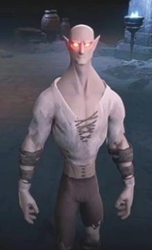
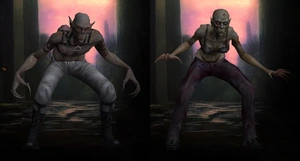

V Rising is a game where you take on the role of a vampire and progress through a pre-generated world collecting resources, building castles, fighting bosses, and potential battling against other players. The game has fun and rare mechanics which you do not see often in many games, these mechanics range from having to hide in the shadows (or waiting for night time) to traverse the world and reach various milestones
When going into this game I decided to play on a private server with just me and a friend as i wasnt particularly interested in the PvP aspect of the game and despite that the game holds up pretty well. I started my adventure by finding a place to settle which would eventually end up to be the spot where i built the castle, me and my friend (after setting up a small dainty shack to hide from the sun) set out to fight the first boss and despite my friend doing most of the fighting i will say that the combat is fair and easy to grasp.
upon finishing the boss fight you will be given various abilities, some combat orientated and some progression related (traversal and support). after a while I decided that we should expand the castle as the room gets full of various crafting and refinery equipment, I began building the first sub room which took a while as refining certain resources takes longer then it should, I eventually decided to try and build an upstairs room and those who know the game instantly know whats wrong with that sentence. after 15 minutes of aggony trying to get the stairs to work I finally look it up to realize that there is no such thing as "a second floor" in this game and that the stairs are supposed to be used on pre-existing ramps in the world to decorate them.
After that we set out again to face some more bosses and found ourselves enjoying the semi unique abilities that were unlocked after each boss such as turning into a rat, a wolf or even a bear each form having their own use. after a while we learnt of the servant system which allows players to capture humans and turn them into dim wited being that will follow commands such gather resources and refine specific items. This where we have gotten up to so far and both me and my friend can both agree that the game is fun and will more then likely have more in store the longer we play we do however recommend that you play this game with people as the game can become "grindy" meaning an extra set of hands will make the process quicker.
I enjoyed a lot about this game and whilst I will admit my expectations were low (due to my lack of interest in top down games) the game was able to get me hooked within minutes as the element of survival itself is a challenge due to having to avoid sunlight by sticking to the shadows and creating a fair and fun boss system with interesting abilities and mechanics to unlock through out the game such as the ability to change form or more combat abilites that each have their own unique affects that allows you to build a character which is oreintated around different styles of combat. The multiplayer is also done extremely well with stable net coding and simple but great configuration.
The game is a very "grindy" game meaning a lot of time will be put into gathering resources and then refining those resources, and while i find no issue with the gathering aspect, the refining aspect could most definitely be shortened as sometimes you may find yourself waiting a long time for things to made but not a long enough time to go out and do something else while you wait.
The character design in this game although unique is subsequently lacking as (at the moment) the only customisable features are face pre-sets, a few sets of hair, a vast array skin tones and a fair few accessories which i wouldn't care about if it wasn't also for the horrendous looking neck on the male characters (as seen below), in which case i believe that there should be some body/race alternatives which could give the player more freedom to create, such as vampire type which doesn't affect game play but changes the characters stance and body proportions for example a body type like the Nosferatu who has a beast like figure and leans forward as though a beast would and a perfect example of what i am talking about is the Nosferatu from "Vampire The Masquerade Bloodlines"


In this game, each piece of equipment has a gear score which judges the level of the players which as a concept has a few issues even some with PvP such as players wandering around without any gear to give the idea of a low gear score but the moment you attack them they equip armour and weapons that have a higher gear score which then means you will more then likely be unfairly killed due to the abuse of the game mechanic (despite the fact I didn't do PvP) and while these issues aren't massive they can cause some headache to keep on top of, it also perpetuates the idea that you aren't progressing at a fair pace making the game feel even more of a grind then previously mentioned.
In conclusion, I enjoy the positives of this game more then I do not enjoy the negatives. I do recommend this game, especially if you have a friend to play it with, but I would like to warn you the game is in early access as of the time that this review is being made meaning the negatives could potentially be resolved however, because its early access there may be bugs or features may be changed (good or bad) but do not let that stop you from trying the game.